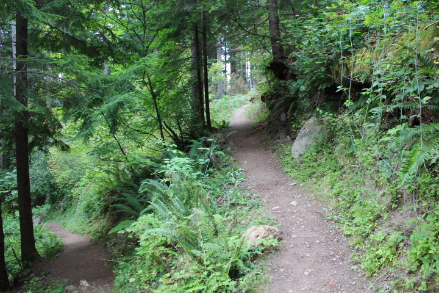

Making big desicions takes significant time and effort, a good example: Career Planning. I started thinking about my career since the day I was able to form full sentences. It was inevitable considering “What do you want to be when you grow up?” was part of the script of conversing with adults. My responce to the question varied all the time from nun to teacher to musician, to poet to doctor. It was mostly a reflection of proffesionals I was exposed to and who influenced me most at the time. As I grew up, career discussions began to take a central theme, in high school we had to branch to different specializations, later pick a college major then eventually grow in our chosen careers. All options were open for me, perks of being a straight A student; it came down to my preference. I decided to pursue a degree that involved Math and Physics; by far my favorite subjects. When it came down to either Engineering or Science, my dad, advised me against Science since it would limit me to academia; I landed at Electrical and Computer Engineering. It almost felt right until 2 years in it was clear that I only liked the Computer Science parts. I wanted my major to change to Computer Science but that would mean one more year in college. I did what every go-getter does, I carried both majors, ploughed through hectic semesters to land in a job that only required a subset of my courses. Maybe some good came of it like learning to work under pressure but I have to admit, I made the wrong choice and that was expensive.
We make choices all the time, about 35,000 in a day. We choose what time to wake up, whether or not we exercise, how we exercise, the clothes we wear, what we eat, what we study or work on and the list goes on. Picking the outfit of the day is easy, at the very least the wrong choice will lead to a few hours of discomfort. On the other hand choosing a career is hard, the choice will live with you for a significant portion of your life. Making the wrong choice will be expensive why is why it is important to identify expensive desicions because they are not always obvious.
Some overlooked choices are the ones we make incrementally, the ones we make daily, weekly or monthly. These are the ones whose consequences are not immediate. For instance, everyday we have the choice to exercise, learn something new, wake up by the alarm, save money. Left to our own devices, we are likely to take the easy route, or at least what looks easy at the time. Left to our own devices we snooze the alarm, spend extravagantly and proceed with our comfortable lives until life catches up with missed opportunities, physiological limitations and regret. Left to our own devices, we make the wrong choice.
Although every choice has pros and cons, expensive choices require extensive consideration. They require research, weighing prons and cons, more research, survey, introspection to figure out what is important now and in the future. All pros and cons considered, we still have to live with the cons. It might take some time, it might tons of effort but it will be worth it in the long run. The longer you think about it, the easier it will be to explain and defend your choice.
Every morning we wake up to 35,000 opportunities. What those opportunities turn into is your choice.